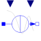

CosineCurrentVariableFrequencyAndAmplitudeCosine current source with variable frequency and amplitude |

|
Diagram

Information
This information is part of the Modelica Standard Library maintained by the Modelica Association.
This current source provides a cosine current with variable frequency f and variable amplitude I,
i.e. the phase angle of the sine wave is integrated from 2*π*f.
Note that the initial value of the phase angle phi defines the initial phase shift,
and that the parameter startTime is omitted since the current can be kept equal to offset with setting the input I to zero.
Parameters (5)
| useConstantAmplitude |
Value: false Type: Boolean Description: Enable constant amplitude |
|---|---|
| constantAmplitude |
Value: 1 Type: Current (A) Description: Constant amplitude |
| useConstantFrequency |
Value: false Type: Boolean Description: Enable constant frequency |
| constantFrequency |
Value: 1 Type: Frequency (Hz) Description: Constant frequency |
| offset |
Value: 0 Type: Current (A) Description: Offset of the sine wave |
Connectors (4)
| p |
Type: PositivePin Description: Positive electrical pin |
|
|---|---|---|
| n |
Type: NegativePin Description: Negative electrical pin |
|
| I |
Type: RealInput Description: Amplitude |
|
| f |
Type: RealInput Description: Frequency |
Components (2)
Used in Examples (1)
|
Modelica.Electrical.Analog.Examples Parallel resonance circuit |